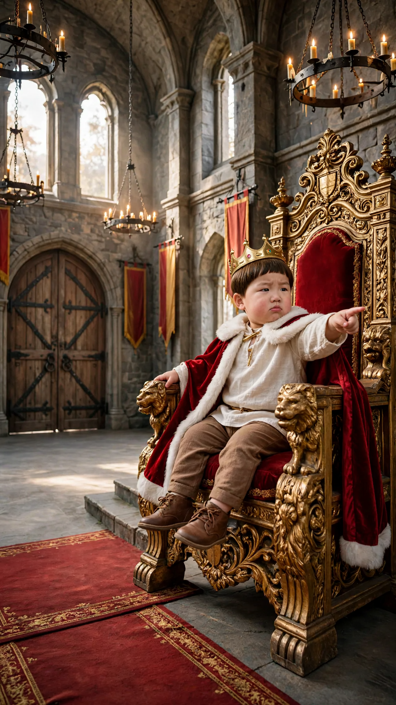
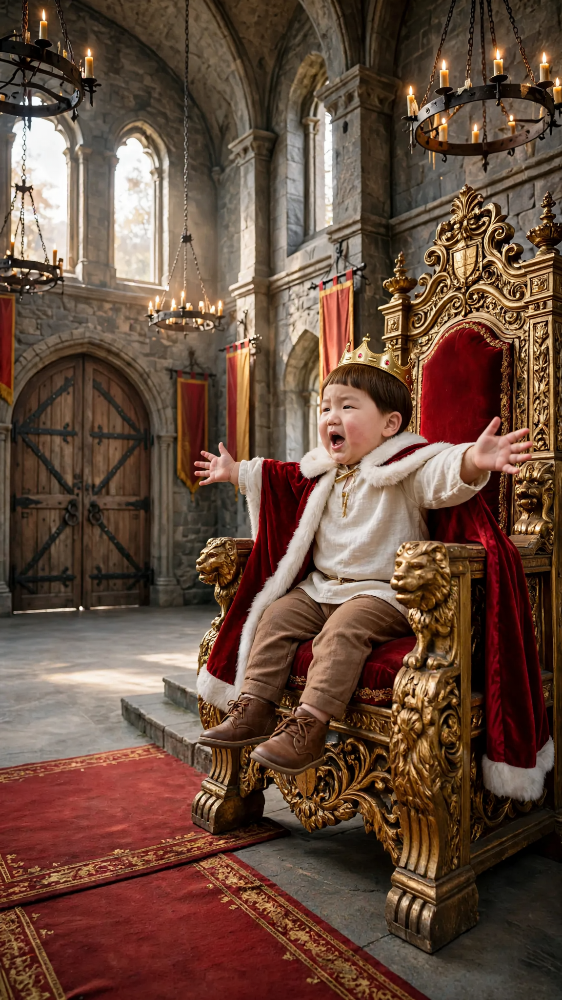
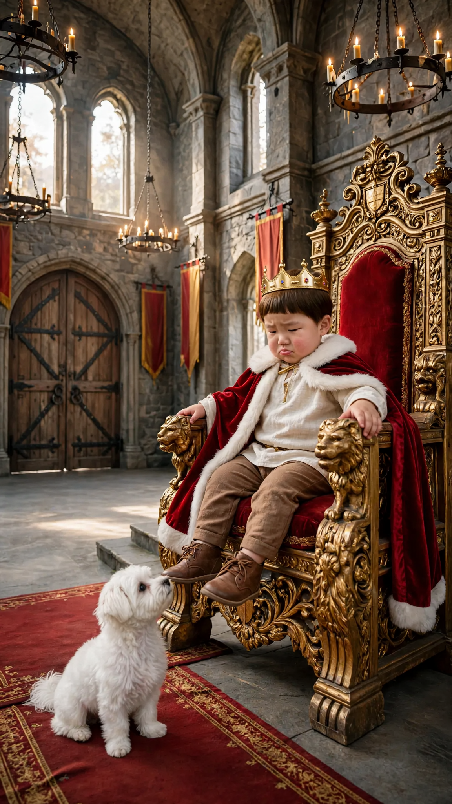
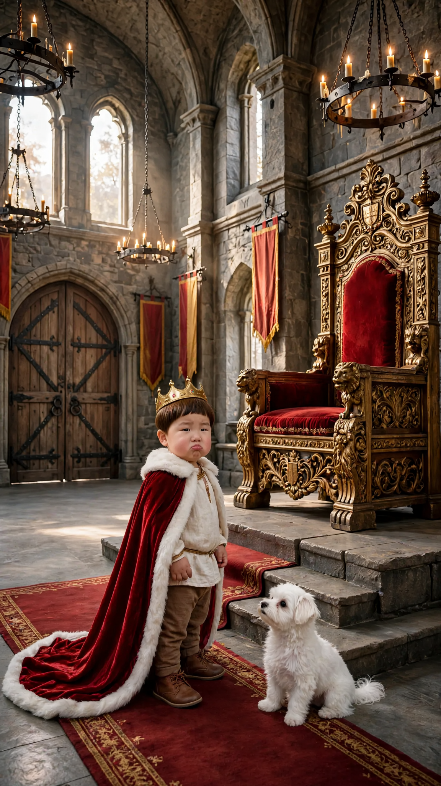

👑 분유를 기다리는 왕
4컷 · 8+8+4+6 = 26초 · Flow 앱: 이미지를 시작 프레임으로 넣고 프롬프트 붙여넣기 · 컷마다 길이 확인
추천 순서: 2번 먼저(콩이 입장 동작)
1번 컷
⏱ 8초「지금 시간이 몇 신데, 내 분유는 아직인 것이냐?」

{kind=link}
이미지를 길게 눌러 «사진 앱에 저장»해도 됩니다
[Character Action & Continuity] Realistic Korean slice-of-life short video clip. a medieval castle throne room in Korea. Maintain exact appearance from start frame: a 24-month-old Korean toddler boy wearing a small gold crown on his head and a red velvet royal cape with white fur trim over a cream tunic and soft brown pants. Scale: a small 24-month-old toddler build with natural proportions. [0-4s] Doyoon points forward from the throne with a stern frown and demands right away [4-8s] Doyoon folds his arms and waits with his chin up [Dialogue Script & Emotion] 도윤 (단독 발화, 0초부터 바로): (화난 왕처럼 근엄하게 호령하며) "지금 시간이 몇 신데, 내 분유는 아직인 것이냐?" [Audio & Voice Specifications] Single Voice Track Only: Definite 18 to 24-month-old Korean INFANT TODDLER boy voice. Low-pitched, cute, raspy little boy toddler voice. Strictly NOT a school-age child, NOT female. Sound Format: Solo toddler voice in a quiet room. Background Sound: Quiet indoor room tone. Continuous steady indoor room air. [Technical Directives] 카메라: 왕좌에 앉은 도윤이 얼굴이 보이는 사선 미디엄 샷. 카메라 고정. 화면: 도윤이와 방만 보인다. 벽과 가구 표면은 무늬 없이 비어 있다. 도윤이 입모양 100% 완벽 립싱크.
2번 컷
⏱ 8초「거기 아무도 없느냐?」

{kind=link}
이미지를 길게 눌러 «사진 앱에 저장»해도 됩니다
[Character Action & Continuity] Realistic Korean slice-of-life short video clip. a medieval castle throne room in Korea. Maintain exact appearance from start frame: a 24-month-old Korean toddler boy wearing a small gold crown on his head and a red velvet royal cape with white fur trim over a cream tunic and soft brown pants. Scale: a small 24-month-old toddler build with natural proportions. [0-4s] Doyoon spreads both arms wide and calls out toward the door right away [4-8s] the arched door opens and Kongi, a small fluffy white Maltese puppy, runs across the floor and sits in front of the dais steps, looking up at Doyoon [Dialogue Script & Emotion] 도윤 (단독 발화, 0초부터 바로): (문 쪽을 향해 크게 외치며) "거기 아무도 없느냐?" [Audio & Voice Specifications] Single Voice Track Only: Definite 18 to 24-month-old Korean INFANT TODDLER boy voice. Low-pitched, cute, raspy little boy toddler voice. Strictly NOT a school-age child, NOT female. Sound Format: Solo toddler voice in a quiet room. Background Sound: Quiet indoor room tone. Continuous steady indoor room air. [Technical Directives] 카메라: 왕좌의 도윤이와 왼쪽 문이 함께 보이는 사선 미디엄 샷. 카메라 고정. 화면: 도윤이와 방만 보인다. 벽과 가구 표면은 무늬 없이 비어 있다. 도윤이 입모양 100% 완벽 립싱크.
3번 컷
⏱ 4초「콩이야~ 너밖에 없어?」

{kind=link}
이미지를 길게 눌러 «사진 앱에 저장»해도 됩니다
[Character Action & Continuity] Realistic Korean slice-of-life short video clip. a medieval castle throne room in Korea. Maintain exact appearance from start frame: a 24-month-old Korean toddler boy wearing a small gold crown on his head and a red velvet royal cape with white fur trim over a cream tunic and soft brown pants. Scale: a small 24-month-old toddler build with natural proportions. [0-2s] Doyoon looks down at Kongi and says his line right away with a disappointed pout [2-4s] Doyoon sighs and slumps back into the huge throne [Dialogue Script & Emotion] 도윤 (단독 발화, 0초부터 바로): (콩이를 내려다보며 실망해서) "콩이야~ 너밖에 없어?" [Audio & Voice Specifications] Single Voice Track Only: Definite 18 to 24-month-old Korean INFANT TODDLER boy voice. Low-pitched, cute, raspy little boy toddler voice. Strictly NOT a school-age child, NOT female. Sound Format: Solo toddler voice in a quiet room. Background Sound: Quiet indoor room tone. Continuous steady indoor room air. [Technical Directives] 카메라: 왕좌의 도윤이와 계단 앞 콩이가 보이는 사선 미디엄 샷. 카메라 고정. 화면: 도윤이와 방만 보인다. 벽과 가구 표면은 무늬 없이 비어 있다. 도윤이 입모양 100% 완벽 립싱크.
4번 컷
⏱ 6초「엄마~ 도윤이 배고파」

{kind=link}
이미지를 길게 눌러 «사진 앱에 저장»해도 됩니다
[Character Action & Continuity] Realistic Korean slice-of-life short video clip. a medieval castle throne room in Korea. Maintain exact appearance from start frame: a 24-month-old Korean toddler boy wearing a small gold crown on his head and a red velvet royal cape with white fur trim over a cream tunic and soft brown pants. Scale: a small 24-month-old toddler build with natural proportions. [0-3s] Doyoon looks toward the camera and calls for his mom right away, pouting [3-6s] Doyoon toddles toward the door with a hungry pout, cape trailing, as Kongi trots after him [Dialogue Script & Emotion] 도윤 (단독 발화, 0초부터 바로): (왕 말투를 버리고 배고픈 아기처럼 칭얼대며) "엄마~ 도윤이 배고파" [Audio & Voice Specifications] Single Voice Track Only: Definite 18 to 24-month-old Korean INFANT TODDLER boy voice. Low-pitched, cute, raspy little boy toddler voice. Strictly NOT a school-age child, NOT female. Sound Format: Solo toddler voice in a quiet room. Background Sound: Quiet indoor room tone. Continuous steady indoor room air. [Technical Directives] 카메라: 문 쪽으로 걸어가는 도윤이 얼굴이 보이는 사선 미디엄 샷. 카메라 고정. 화면: 도윤이와 방만 보인다. 벽과 가구 표면은 무늬 없이 비어 있다. 도윤이 입모양 100% 완벽 립싱크.